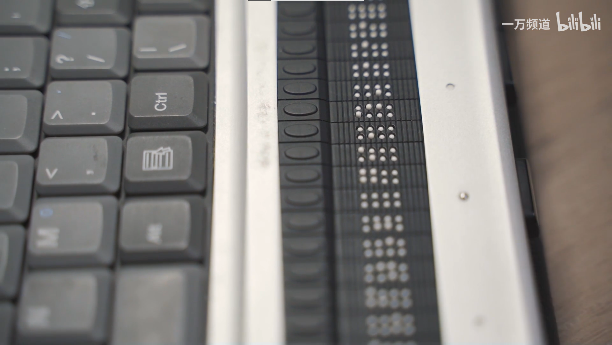

Joubert综合征是一种基由因问题导致的罕见病，患者天生在视力、语言、智力、行动等多方面存在障碍，属于多重残疾。年幼的鲁鼎承正是患有这样的疾病，他从出生起就不曾见过光明，智力和反应力远远落后于同龄人，口腔肌肉无法精细配合导致他不能正常咀嚼和说活，身体肌肉发育不良让他的行动也分外艰难。 |
在中国，存在许多像鲁鼎承这样的残疾儿童。他们残疾的程度不同、类型不同，他们中有男孩也有女孩，他们来自不同的地区，处在不同的年龄阶段，面对全然不同的境况，孩子们不得不走上各不相同的受教育之路。 |
鲁鼎承是全国范围内为数不多可以上学的视多障孩子。 |
目前中国残疾儿童接受义务教育的形式主要有三种： |
孩子受教育的状况往往仰赖于家长的认知。而许多家长第一次面对残疾儿童的特殊状况，内心缺乏精神支撑，在养育孩子的过程中缺少经验和信息来源。在孩子出现残疾病症后，家长们往往奔波于为孩子寻找治疗渠道，而忽略了孩子的早期干预与学习。他们很难了解到要如何为残疾孩子提供教育、使用什么样的教育方式 |
无数像鲁鼎承这样的孩子还在晃动着盲杖小心翼翼探索面前的道路时，其他孩子早已踏上教育的阶梯、远远跑在前面了。要如何为残疾孩子们搭建属于他们的阶梯？家长的精力毕竟有限，经验提供与认知构建的责任应当由社会来承担。当我们构建了更加完善的教育体系，才能为残疾孩子架设起通向未来的桥梁。 |
鲁鼎承作为一名视多障儿童，目前正走在特殊教育的道路上。 |
首先，特殊教育学校的教育质量往往不如普通学校。普通学校注重知识的学习与素质的培养，文化学科丰富。而特殊学校往往要花费许多资源对残疾孩子进行适应性培养，安排诸如生活适应训练这样的课程，其师资和教育资源都难以让其为残疾孩子们提供更加深入的文化素质教育，其知识划分停留在比较浅显的层面。对于鼎承来说尚且合适，而对于许多智力发育正常的残疾儿童来说，这样的教育资源难以符合其求学需求。 |
其次，特殊学校内针对残疾儿童的关怀为孩子营造出了象牙塔式的环境。上课期间老师会手把手教鼎承感知简单的穿针引线道具，用极富亲和力的口吻同他交流，孩子们上下课会相互牵引着前往教室或食堂，无微不至的校园关怀如同温水，孩子在其中待久了就难以适应外界的环境。一位一直在普通学校接受教育的盲童朱轩昂提到：在小学二三年级时他对普校感到厌恶，因为周遭的小学生总是嘲笑、欺负自己。因为在普校的学习经历，升入初中的朱轩昂现在已经逐渐适应现状，并努力完成学业、做好自己。而从未接触过特殊学校以外的社会的残疾孩子们，离开特校以后又要花多久来适应社会？孩子们最终都要走向社会，而与社会生活脱节的特殊学校教育是浸泡他们的温水。 |
“孩子的社会也是一个社会，这个社会什么样的人都有。你小的时候要面对小的社会，大了以后才能面对大的社会。” 很多残疾孩子的家长都会担心，孩子离开自己的羽翼遮蔽后，是否能在社会的天空飞翔？要被这个社会接受，首先要学会认识社会的残酷。 |
另一部分残疾孩子则在特殊学校老师的建议下，为了更好地适应生活，转去普通学校接受融合教育，杨嘉诺就是这些孩子中的一员。 |
国家对于残疾孩子的特殊教育提出一人一案，医校结合的理念。然而，在教育资源分配不均的大背景下，为每个残疾孩子提供定制化的教育实施起来就更加困难。杨嘉诺作为中途转入普校的盲童，首先需要的是适合他的盲文课本。当前，盲文教材数量很少，其中盲文书籍的数量则更加有限，而适合杨嘉诺所在学校的教学内容的盲文教材更是几乎不可寻。为此，他的家长手动将学校所用的课本录入为电子版，再花钱请人将课本图片插入电子文档，并将图文严格按照原本的课本来排版，以方便嘉诺上课使用，最后打印成盲文书籍。这样下来费用很高，一本7、8块就能买到的的数学教材最终需要花费500多元才转化为杨嘉诺可以使用的教材。 |
教材方面的困难尚能通过努力解决，孩子的上升渠道则更令人担忧。残疾人孩子在完成九年义务教育以后，常常被高等教育弃之门外，这是由于中考针对残疾孩子的政策尚不完善。在中考特殊考场缺少先例的情况下，专门的考卷、1.5倍延时以及无障碍考察安排等诉求都是家长们正在努力争取而没有全部落实的内容。杨嘉诺希望将来能回到特殊学校做一名语文老师，这需要拥有合理的上升渠道来让他继续学习深造。如果缺少上升空间，别无选择的他认为自己不得不去做盲人按摩。 |
在暑假历史兴趣班的时候，杨嘉诺总是需要家长陪同在自己身边，因为老师常常按照ppt上展示的内容讲课，没有顾及到他的特殊情况，他就需要家长来为他说明ppt或黑板上 的内容。许多普通学习的教师缺乏特殊教育经验，常注意不到残疾孩子的需求；部分教师的素质及能力也有所欠缺，对残疾孩子存在偏见，例如杨嘉诺的数学老师就总是刻意忽略他，似乎认为他并不能跟上正常的教学进度，直到他一次期中考试拿了高分，数学老师才对他有所改观。此外，盲童学习理科尤其是涉及计算和几何想象类的科目时存在许多困难：譬如同位角和内错角就让孩子搞不清楚；乘除法及开方运算在平时可以借助计算机，考试时就只能心算，普通孩子三年级就可以掌握的乘除法却是残疾孩子在数学道路上的沟沟壑壑。缺乏特殊教育素质与能力的教师很难注意到残疾孩子的此类困难，不懂得如何对孩子进行正确的引导。具有此类能力的教师也同教育资源分配不均的现状一样，呈现出明显的城乡差异，孩子们面对的是难以获得合适的融合教育资源的困境。 |
与此同时，许多学校的硬件设施达不到无障碍水平，在普校接受融合教育的残疾孩子们出行、上下学和日常生活都会受到很大的影响。 |
像鲁鼎承那样的孩子是十分幸运的，他的母亲攻读特殊教育硕士学位，发起公益项目，联合专业人士，帮助更多的残疾儿童，和她们交流残疾孩子的教育经验，有着大量的信息资源，指导她如何为孩子做出更好的选择。但大多数家长没有这种信息和能力，在孩子学习乘除法遇到困难时，“我没什么文化，只有看老师怎么教了。”一言以蔽之，残疾孩子的家长们缺少信息渠道，来了解应如何为孩子提供合适的教育。家长们之间的交流十分重要，单打独斗总是十分困苦的。杨嘉诺的家长花费大量时间精力为孩子制作了教材教具，成本巨大；但如果残疾孩子的家长们能够抱团，相互扶持、分享经验，事情就会来的容易很多，不仅可以将教材制作的成本平摊到每个家长身上，成果共享，也能互相汲取经验，共同为孩子寻找更好的培养方案。 |
普通学校的环境意味着让残疾孩子面临一个小社会，这里存在对残疾孩子不友好的声音和行为，会对残疾孩子的心理造成很大的影响，是残疾孩子适应社会的一道难关。只有家长鼎立支持、教师耐心引导、校园扶正风气、畅通上升渠道，才能让残疾孩子们的融合教育之路走得稳当。 |
残疾学生进入高校主要有两种方式：一是单独招考，由高等特殊教育院校单独招收；二是和普通学生一样，参加普通高考。2017 年，被高校录取的残疾人人数仅占全部录取人数的 0.14% ；可根据全国第二次残疾人抽样调查，中国残疾人占全国总人口的比例为 6.39% 。这足以说明，残疾儿童的教育工作尚且面临着困境。他们踏着并不完善的教育阶梯缓步前进，步履艰难。 |
然而前路并非一片灰暗。杨嘉诺在转入普校以后，为了提高学习效率，用上了配有点显器的电脑。 |

点显器是一种能够将电子文本显示为盲文触点，供盲人触摸阅读的电子设备。现在，杨嘉诺在做作业时总是通过点显器阅读题目，再用盲文纸独自作答，免去了家长口述和代笔作业的工作，这让他的学习便利了许多。 |
像这种利用科技的力量助力残疾儿童教育的成果，正像星星点点的火光，一点一点地照亮孩子们前方的道路。 |
传统的盲人出版物印刷往往通过金属板冲压的方式进行印刷，需要专门的印刷工具和纸张，而且只能印刷文字，成本高昂、印刷物易磨损、价格也十分昂贵。正是因为成本高昂，盲人出版物数量较少，覆盖类型较窄，也缺少文字以外的表现方式。 |
Blitab的联合创始人Slavev说:“生产印刷盲文书非常昂贵，全世界的书只有1%用盲文印刷。在这个数码时代，盲人也应该应该享受科技发展带来的好处，他们有权利做到任何正常人能做的事情，比如浏览网页，看书和下载。” |
中科院针对传统盲文印刷技术的缺陷，研发出了适应于不同基材的绿色印刷盲文出版技术。 |
通过印刷，可以让盲童来玩过去无法玩的益智玩具。例如，可以在魔方上印刷不同的图形，让盲童能够区分不同的面，通过游玩魔方，对盲童的智力和想象力的开发大有帮助。例如，设计盲人用的触感地图，来帮助盲童学习地理知识，了解更广阔的世界。再比如，开发独属于盲人的触摸类益智游戏，训练盲童的反应力和记忆力，等等…… |
许多人下意识认为，残疾人很难参与普通人心目中“高大上”的行业，他们的人生道路止步于勉强维生。而事实上，限制残疾儿童未来发展的，正是这种根深蒂固的社会偏见——这让人们忽视了对他们的教育，也让孩子们自己放弃了对自己的信心。 |
我们不能放任观念对残疾儿童的禁锢，我们要看到他们身上无限的可能性。 |
在中国，残疾人也从事着形形色色的行业。 |
蔡勇斌是一名拥有十年的代码开发经验的盲人工程师。蔡勇斌作为盲人代码工程师，与普通的明眼工程师使用编译器进行代码开发的习惯不同，他总是使用无障碍效果最好的记事本软件书写代码，且编写程序力求简洁高效，只在于他人协同工作的时候对代码进行一定程度的排版。优秀的代码编写能力让他获得了阿里代码领域最高荣誉“多隆奖”。 |
魏祥患有先天性脊柱裂、椎管内囊肿，导致他的双下肢运动功能丧失。尽管疾病缠身，他不曾自甘平庸，最终以648分的好成绩考入了清华大学。 |
盲人点显器及其软件的开发和维护团队中，有许多盲人程序员的参与。中国盲人图书馆中的五人编程小组中，就有两名视障人士。组长张军军是其中之一，使用读屏软件编写代码和检查组员的代码；另一名视障人士成员张帅帅则使用带点显器的电脑编写代码。他们不断维护更新软件和开发新产品。 |
《中华人民共和国宪法》和《中华人民共和国残疾人保护法》明确赋予了残障者平等接受教育的权利。 |